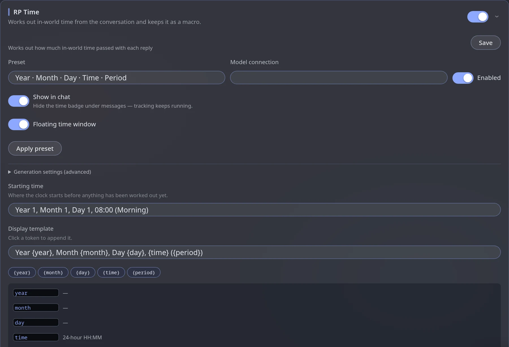

RP Time
module.timeRP Time works out what time it is in the story from the conversation. It shows a time badge under replies, keeps a floating clock, publishes the time as a macro, and can tell the model the current time before it writes — so the story stops forgetting that it is already midnight.
Set it up
Turn on RP Time
Engine panel → Modules → switch on RP Time.
Choose a connection
Pick which model works out the time. Any cheap one will do.
Set the starting time
Where the clock begins before anything has been worked out. The default is Year 1, Month 1, Day 1, 08:00 (Morning).
(Optional) Start from a preset
Choose a Preset (the default is Year · Month · Day · Time · Period) and press Apply preset — it fills the instruction and sampler fields from a ready-made setup. Nothing changes until you press Apply.

Settings
| Setting | What it does |
|---|---|
| Model connection | Works out the time from the chat |
| Preset + Apply preset | Fills the neighbouring fields from a ready-made setup |
| Starting time | Where the clock starts |
| Display template | How the time is written in the badge and the floating window, e.g. Year {year}, Month {month}, Day {day}, {time} ({period}). Click a token — {year} {month} {day} {time} {period} — to append it |
| Show in chat | The badge under each reply. Off only hides the badge — tracking keeps running |
| Floating time window | A small always-on-screen clock. Closing it with ✕ hides it, it does not stop tracking; this switch brings it back |
| Enabled | The whole module on or off |
Buttons
- Advance now — works the time out right now instead of waiting for the next reply.
- Reset for this chat — forgets this chat's time and starts again from the starting time.
Because the time is a macro, you can use it in prompts and lorebook entries — for example an entry that only matters "at night". Check the Macros card for the exact name.